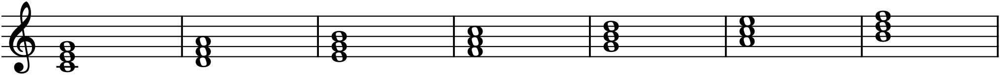
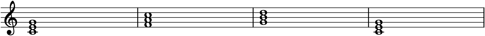
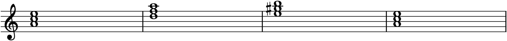

Chapter 11 built the four triad qualities in isolation, on a bare root with no context. But music is written in a key, and a key does something remarkable: it hands you a ready-made set of exactly seven chords, one rooted on each degree of the scale, each with a quality already decided for you. These are the diatonic chords — the chords native to the key — and they are the working vocabulary of tonal harmony. Learn the seven chords of a key and how they pull on one another, and you can write a progression.
12.1A triad on every degree
Take the C-major scale and build a triad on each note, using only notes from the scale — no sharps or flats from outside the key. On C you get C–E–G; on D, D–F–A; on E, E–G–B; and so on up to a triad on B. Seven scale degrees, seven triads, all drawn from the same seven white keys.

The chords in Figure 12.1 are not all the same quality, even though each is just “a stack of two thirds from the scale.” Because the scale’s half steps fall in fixed places (Chapter 7), the thirds come out major on some degrees and minor on others, and the result is a fixed, predictable pattern.
12.2Roman numerals
Musicians label these seven chords not by letter — which would change in every key — but by Roman numeral, giving the scale degree of the chord’s root. The numeral’s case encodes the quality: uppercase for major, lowercase for minor, and a little circle (°) for diminished. This is the single most useful notation in all of harmony, because it describes a chord by its role in the key rather than its absolute pitch, so the same analysis fits every key at once.
Here is the full set for a major key:
| Degree | Chord in C | Numeral | Quality | Name |
|---|---|---|---|---|
| 1̂ | C–E–G | I | major | Tonic |
| 2̂ | D–F–A | ii | minor | Supertonic |
| 3̂ | E–G–B | iii | minor | Mediant |
| 4̂ | F–A–C | IV | major | Subdominant |
| 5̂ | G–B–D | V | major | Dominant |
| 6̂ | A–C–E | vi | minor | Submediant |
| 7̂ | B–D–F | vii° | diminished | Leading-tone |
The pattern of qualities — I ii iii IV V vi vii°, major-minor-minor-major-major-minor-diminished — is identical in every major key. That is the whole payoff: memorize it once and you know the chords of all twelve major keys. In G major, I is G major, ii is A minor, V is D major, and so on; only the letters move, never the pattern.
12.3The three functions
Seven chords is more than a beginner needs to juggle at once, and happily they sort into three functions — three jobs a chord can do — organized around the three major chords of the key:
- Tonic (I) is home. It is the chord of rest and arrival, the place a phrase departs from and returns to. The submediant (vi) and mediant (iii) share notes with I and can stand in for it.
- Dominant (V) is the pole of tension, and it pulls back to the tonic more strongly than any other chord. It contains the leading tone (7̂), which leans up into the tonic (Chapter 7), and it shares the restless tritone with vii°, which does the same dominant job.
- Subdominant (IV) is departure — it leads away from the tonic and typically toward the dominant. The supertonic (ii) shares its function and often substitutes for it (this pre-dominant role is why ii and IV feel interchangeable).
Reduced to its bones, the grammar of tonal harmony is a journey out and back: tonic → subdominant → dominant → tonic, or T–S–D–T. That single arc underlies an enormous amount of music.

The I–IV–V–I of Figure 12.2 is worth playing until it is in your ear, because it is the seed of countless pieces — folk songs, hymns, blues, pop. Everything richer in Part 2 is an elaboration of this basic tension-and-release.
12.4Chords in a minor key
Minor keys work the same way, with one wrinkle you already met in Chapter 7. Built from the natural minor scale, the diatonic triads come out i, ii°, III, iv, v, VI, VII — note that the chord on 5̂ is minor (v), because natural minor has no leading tone. But a minor v makes a weak, unconvincing dominant. So in practice composers raise the seventh degree (harmonic minor), which turns the dominant into a proper major V with a leading tone — the same fix, and for the same reason, as in Chapter 7.

So the working chords of a minor key are i, iv, and V (major, with the raised leading tone), plus the diminished ii° and the major VI and III borrowed from the natural scale. The essential point is the one Figure 12.3 shows: in minor, you almost always raise the leading tone to make the dominant major, so that V → i still pulls the way it should.
12.5The gravity between chords
Chords are not equally likely to follow one another; they have tendencies, a kind of harmonic gravity. The strongest of all is the pull of V back to I — the dominant resolving to the tonic — and more generally, root motion down a fifth (V to I, ii to V, vi to ii) is the most propulsive progression in the language. It is no accident that these are steps around the circle of fifths (Chapter 8): the circle is a map of harmonic closeness, and moving along it is what makes a progression feel like it is going somewhere.
You now have everything needed to write a progression: seven labelled chords, three functions, and a sense of how they pull. What Part 2 adds from here is refinement — turning chords over so the bass line moves well (Chapter 13), spacing them across four voices (Chapter 14), punctuating phrases with cadences (Chapter 15), and decorating them with non-chord tones (Chapter 16). But the harmonic skeleton is in place.
In MuseScore
MuseScore can build diatonic chords for you and label them with Roman numerals.
- Build a diatonic triad fast. Enter the root in note-input mode, then press Alt+3 and Alt+5. Because these add diatonic intervals (Chapter 9’s box), the chord that appears is automatically the right quality for the key — I on the tonic, ii on the supertonic, and so on, with no accidentals to fix.
- Enter a progression by doing this on each root in turn. For I–IV–V–I in C, build triads on C, F, G, and C.
- Label with Roman numerals through Add ▸ Text ▸ Roman Numeral Analysis — type
I,IV,V,vii°and MuseScore formats them properly beneath the staff. (For minor, remember to raise the leading tone of the V chord with ↑, per Figure 12.3.) - Press Space to hear the progression play back as blocked chords.
Try it: build the I–IV–V–I of Figure 12.2 in C major and play it. Then set a new score in A minor, build i–iv–V–i, and — crucially — select the G in the V chord and press ↑ to make it G♯. Play both. The major-key progression and the minor one share the same shape, and the single raised leading tone is what lets the minor version close as firmly as the major.